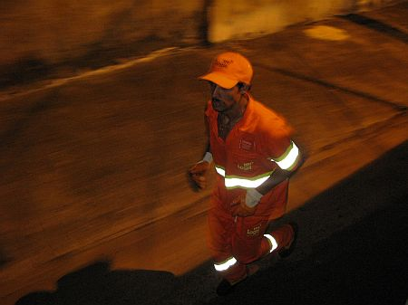

vamo, vamo, vamo…
Mundo
Acompanhando a galera
0Novidades no nosso blog! Criei uma página hoje chamada “Todo mundo junto“. Que pode ser acessada diretamente do nosso menu (acima).
Ela mostra os últimos posts nossos e dos nossos amigos corredores TUDOJUNTO. É uma forma de mostrar a união do povo.
Visite regularmente e acompanhe a galerinha!
Concurso cultural TAEQ
0A TAEQ para motivar a Equipe Taeq (da qual sou o Garoto Taleqx), organizou um concurso cultural.
Para participar é necessário enviar um frase de motivação aos participantes da Equipe pelo Twitter.
O texto do twitter deve ser precedido de @taeq #torcidataeq.
As 3 melhores frases serão premiadas com uma cesta de produtos com: 1 camiseta de corrida, 1 shorts de corrida, 1 squeeze, 1 cx com 3 unidades de barrinhas de cereais, 1 cx de chá, 1 embalagem de castanha orgânica, 2 cxs de gelatinas, 1 cx de pudim em pó, 1 sabonete, 2 barrinhas orgânicas.
Mais informações: http://18maratona.taeq.com.br/
Evento – Inteligência na adversidade
1Nosso amigo de blog Carlos Dias, os convida a participar do evento:
Inteligência na adversidade
Como ter qualidade em lugares e situações extremas.
A palestra aborda, em uma história bastante envolvente e interativa, como a motivação, aliada a estratégias e à crença na vitória fizeram com que o atleta (ultramaratonista) e palestrante Carlos Dias conseguiu superar todas adversidades para realizar seus sonhos.
A travessia de 4 desertos, nos climas mais extremos e inóspitos do mundo e a travessia dos EUA de Leste a Oeste enriquece ainda mais as lições de vida de Carlos, que podem não só ser usadas na vida pessoal como no âmbito empresarial, utilizando conceitos de planejamento, alcance de metas, gerenciamento de riscos, missão, visão, valores e muitos outros.
A palestra “Inteligência na adversidade” traz verdadeiras lições de como encarar a vida com o foco na realização de sonhos, acreditando, porém mantendo os pés no chão e colocando cada desafio diário como uma meta, buscando estratégias racionais para o alcance dos objetivos. As inscrições podem ser feita direto com Carlos Dias através do email carlosdias12@hotmail.com até o dia 28 de Fevereiro de 2010, veja mais informações abaixo.
Programa:
– Visão
– Missão
– Valores
– planejamento
– Lidar com “nãos”
– Busca contínua, mesmo com incerteza
– Assumindo riscos
– Como usar os recursos mentais em momentos difíceis
Organização
- Palestrante – Carlos Dias
- Telefone (11) 4361-4434/7439-4151
- E-mail – carlosdias12@hotmail.com
- Site – http://ultramaratonistacd.wordpress.com/
Programação
- Data: 04 de Março
- ECOFIT ACADEMIA RUA CERRO CORÁ 580 ALTO DE PINHEIROS Próximo metro vila madalena.
- Horário: 20h00
- Carga Horária: 75 minutos
- Investimento: R$25,00 por pessoa incluso camiseta, certificado, coffee break
- Serão sorteados brindes entre os participantes
Os “ex-sendetários”, Alex e Claudio estarão lá.
Vídeo sobre a Samsung 10K – 2009
5A Corpore disponibilizou um vídeo sobre a Samsung 10 que eu e o Claudio corremos. Achei legal e resolvi disponibilizar aqui…
Por isso eu corro…
2Citarei abaixo trechos extraídos do site do amigo Fábio Namiut os quais considero a razão por que amo este esporte e quero fazer parte dele pra sempre. O Fábio já foi como nós, sedentário, gordo, estressado e, além disso, fumante.
Mesmo depois de muita melhora física, muitas corridas grandiosas e maratonas, ele, como outros corredores (daí a maravilha deste esporte), impressiona com o relato que consegue fazer de uma corrida aparentemente simples, curta e pobre (sem medalha) um evento pra lá de especial.
Bem… deixo ele falar. Que prazer me dá ler isto:
“O que é, afinal, uma corrida? Uma simples competição esportiva, para onde se vai apenas e tão somente para se alcançar um objetivo, seja ele um resultado, um recorde, um troféu, um prêmio em dinheiro, uma distância até então inédita ou mesmo uma singela medalha de participação? Uma relação formal fornecedor-cliente, onde se paga um determinado valor para receber, ao final, as mercadorias correspondentes ao montante despendido? Uma forma de motivar quem pratica o esporte, colocando à prova suas condições e seu treinamento? Um desafio, onde o adversário pode ser você mesmo, o seu velho parceiro de treinos ou aquele camarada que você nem sabe o nome, mas que vive topando por aí e te olhando com um arzinho de superioridade? Sim, tudo isso. Mas não só isso. Uma corrida é muito mais. É, sobretudo, uma celebração. Da vida, da saúde, do bem-estar. Corre, normalmente, quem está bem, quem não está, fica um tempo no gancho. E depois volta, são coisas da vida. É reunir pessoas que, mesmo das mais diferentes origens, pensam de maneira semelhante à sua, gostam das mesmas coisas que você. E se tornam seus grandes amigos sem nenhum esforço.
Esse foi o espírito com que encarei, desde antes da largada ser dada, esta prova que marca, muito provavelmente, a minha despedida da temporada 2009.
…
Correndo com meta, mas mais ainda com prazer. Querendo aproveitar aquele final de prova e de temporada para sentir, nem que fosse por alguns instantes, o gosto de correr livre, sem a bola de ferro da obsessão cega por resultados no pé. Talvez tenha até diminuído o ritmo novamente um pouco ali. Foi uma sensação breve, mas gloriosa. A de estar fazendo algo que não nasci sabendo, mas estou aprendendo, cada dia mais. E que amo verdadeiramente.
…
Pena não ter feito mais medalhas. Distribuí todas as que levei e fiquei feliz com o retorno de quem recebeu. Gente que compreende o valor de coisas como simplicidade, amizade e tradições. Aos amigos a quem presenteei, fiz questão de agradecer pela companhia, não só hoje, mas no decorrer de mais um ano cheio de saúde, alegrias… e corridas! Termino um ano de altos e baixos, como são quase todos os anos, de cabeça erguida para os novos desafios que, se Deus quiser, virão, na corrida e fora dela. Como disse aos Fabios Matheus e Vilhena, que me receberam logo após a chegada; ao Luis Carlos, que me acompanhou na retirada do kit (maçã, duas bananas e água à vontade) e a alguns outros amigos depois, a sensação pós-prova era estranha, uma vontade de continuar correndo.
…
Finalizando, quero falar da satisfação que foi ser cumprimentado por várias pessoas que vieram conversar comigo, dizendo que são visitantes assíduos do site. Muito bacana saber que os relatos que faço sobre as corridas, além de me darem a satisfação de escrever, também servem para ajudar as pessoas, compartilhando informações e opiniões, auxiliando na divulgação dos eventos, criticando construtivamente, elogiando quem merece, enfim, sendo um espaço onde o corredor tem voz. Não só este que vos escreve, mas todos os que frequentam o Arquivo de Corridas (e o CorridasDeRua.com, que reproduz os textos na seção “A Visão do Corredor”). Obrigado a todos, sejam sempre muito bem-vindos. E continuem me ajudando a fazer este trabalho, que é de formiguinha, mas está, na medida do possível, ajudando, junto com os bons organizadores, a melhorar as nossas corridas de rua.”
Fábio, você pode afirmar que todos que correm são especiais. Mas todos os corredores têm a agradecer sua especial atenção, cuidado e demonstração do quanto isto tudo é importante. O agradecimento é por você conseguir abraçar tanto com apenas dois braços.
Sinta-SE enormemente abraçado, AMIGO FÁBIO.
Ultra solidária – Divulgação
1Ação como está tem de ser divulgada. Além do que, o Carlos Dias é uma figura super bacana. Amigos de todos (e também dos futuros ex-sedentários). Ainda não sei o horário, mas eu irei.

Carlos Dias correndo “24 horas” contra o câncer infantil
Abaixo teor do que pode ser visto na íntegra no blog http://ultramaratonistacd.wordpress.com/
Nesse final de semana dias 19 e 20 de dezembro estarei correndo 24 horas na esteira na Academia ECOFIT a única academia ecológica do Brasil, essa ação mais uma vez será para divulgar e arrecadar fundos para o Graacc Grupo de apoio ao adolescente e criança com câncer.
E também será uma grande oportunidade para quem quiser comprar quilometros e ajudar no combate ao câncer infantil, eu estarei fazendo o que mais gosto de fazer que é correr, meu patrocinador a Crocs já comprou 50 km o WH SPA também já comprou 50km você também pode comprar quilometros. Pretendo correr 100km mas sua presença poderá aumentar esse número.
Aproveito para convidar todos amigos para visitarem a academia no periodo que estarei correndo para bater um papo e tirarmos uma foto juntos, a largada será as 10 hs do sabado dia 19 e o final será as 10 horas de domingo dia 20 de dezembro.
O endereço da academia é Rua Cerro Corá, 580 – Alto de Pinheiros – São Paulo próximo estaçao vila madalena
Vamos fazer parte dessa atitude combater e vencer o câncer infantil é um desafio que devemos enfrentar juntos.
Abraços
Carlos Dias
Para me lembrar e persistir
2Tenho de colar estas notícias da folha, para não me esquecer que ainda estou nos primeiros passos para um sono bom. Livre de mazelas como as descritas. Se eu estivesse como no primeiro semestre certamente teria vergonha de veicular isso. Mas agora deve servir como um alerta de que há um caminho ainda muito longo para eu percorrer. Eu estava no fundo do poço. Comemorei aqui, com você, ter tirado os pés do lamaçal. Mas é chegada a hora de me dar conta de que estou apenas segurando na ponta da corda presa ao sarilo. Cabe só a mim, persistir, e girá-lo uma vez por dia, todos os dias, até que eu finalmente saia do poço para a plenitude da vida.
Primeiro ato de resignação: Tenho de dizer, mesmo com essas notícias. Só fiquei uma hora e meia na cama. Inconcebível. Antes de entrar no escritório tomei um café expresso amargo e um energético (um cada mão, alternando as goladas) revendo a cena, agora, é deprimente. Se já dei o primeiro passo, tenho de partir para o segundo, depois o terceiro…
Também treinei duas vezes a noite, fugindo do que eu havia programado. Voltar ao plano A.
Não posso perder o foco.
EU CONSEGUIREI!
Superação
18 years
by Thiago Zamith
in Mundo
Sempre que vejo esse vídeo ou escuto falar desses dois me anima muito para treinar e resolvi dividir com todos aqui um pouco sobre eles.
O Team Hoyt’ (Equipe Hoyt) é composto pelo pai (Dick Hoyt) e o filho (Rick Hoyt, nascido em 1962) em Massachusetts (EUA), juntos completaram maratonas, triatlos e outros eventos esportivos. Rick é deficiente desde o nascimento, pois ao nascer, seu cordão umbilical ficou preso ao pescoço, e ele perdeu oxigenio no cerebro.
Graças aos seus pais, que ignoraram os avisos dos médicos que diziam que ele viraria um vegetal. Aos 12 anos Rick começou a usar um computador especial para se comunicar, usando movimentos de sua cabeça. Suas primeiras palavras foram: “Go Bruins!”, então sua familia descobriu que ele era um fã de esportes. Eles o ajudaram a correr sua primeira corrida em 1977, uma corrida beneficente de cinco milhas.
Dick é tenente-coronel aposentado da Air National Guard. Rick é graduado na universidade de Boston e agora trabalha na faculdade Boston. Eles continuam competindo em corridas, e também são motivadores.
Até Junho de 2005, o Team Hoyt já participou de um total de 911 eventos, incluindo 206 triatlos (seis deles competições Ironman Triathlon), vinte duatlos, e 64 maratonas, incluindo 24 maratonas de Boston consecutivas. Eles também pedalaram e correram a corrida dos EUA, em 1992 (uma jornada de 3735 milhas, completa em 45 dias).
Quando perguntam a Rick uma coisa que ele deseja, que ele gostaria de dar a seu pai, ele responde: “A coisa que eu mais gostaria de fazer por meu pai, seria senta-lo em uma cadeira e eu poder empurrar ele com minhas forças”
Video deles em um Ironman:
Atletas no lixo
0
Atletas no lixo
O Claudio acabou de enviar esta notícia, gostei bastante e resolvi postar o link dela aqui: Atletas no lixo.
.jpg "DSC01703 (576x1024)")
.jpg "DSC01706 (1024x576)")
.jpg "DSC01715 (576x1024)")
.jpg "DSC01849 (1024x576)")
.jpg "DSC01930 (1024x576)")
.jpg "DSC01940 (576x1024)")


{kind=link}
Últimos comentários